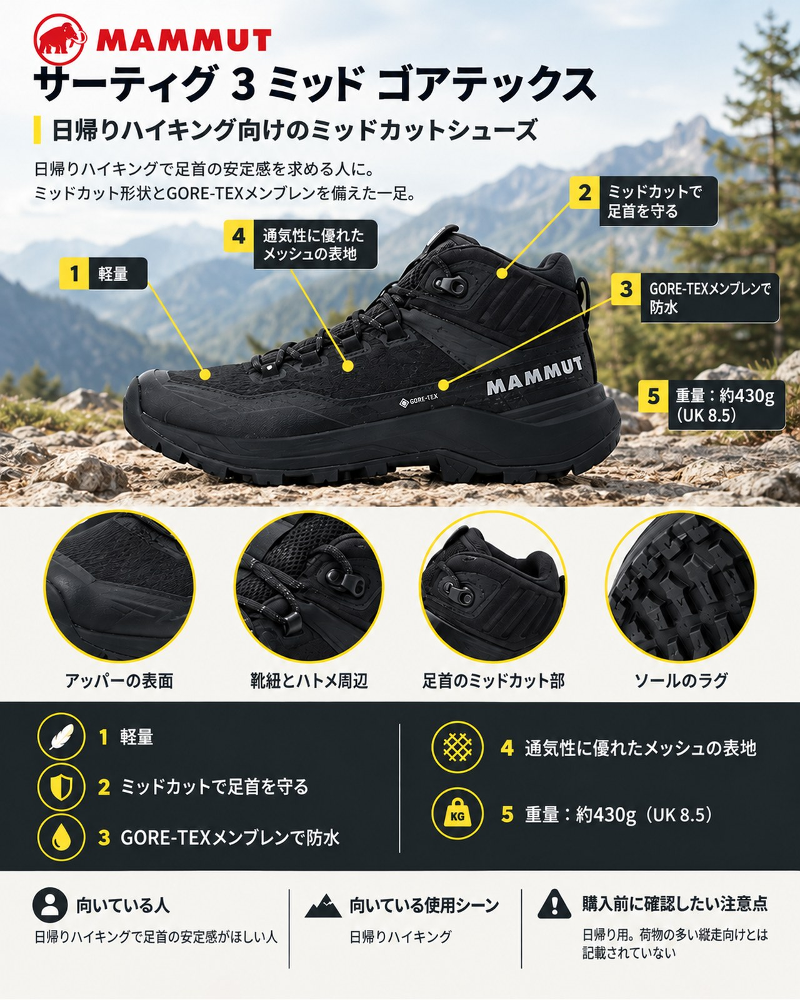

マムート
サーティグ 3 ミッド ゴアテックス

¥30,800（税込）
軽量で快適性と防水性に優れた、日帰りハイキング向けのミッドカットシューズです。
購入先
基本情報
| ブランド | マムート |
|---|---|
| カテゴリー | シューズ（登山靴） |
| 対象 | メンズ |
| 価格 | ¥30,800（税込・2026-10-25 確認） |
主な特徴
- 軽量と記載
- ミッドカットで足首を守る
- GORE-TEXメンブレンで防水
用途・季節の目安：春・夏・秋／低山・中級山岳 気になりやすい点への対応：軽さ・膝への負担
メーカー公表の仕様
ブランド公式ページの記載をそのまま整理しています。記載がない項目は「不明」とし、推測では書きません。
| 重量 | 430g（UK 8.5・片足かペアか記載なし） |
|---|---|
| 素材 | 不明（公式ページに記載なし） |
| 防水・撥水 | GORE-TEXメンブレン |
| サイズ展開 | 不明（公式ページに記載なし） |
ヤマフィットの評価
上の公式記載をもとにヤマフィットが整理した評価です。メディアやユーザーの評価・レビューは、まだ収集していないため掲載していません。
メリット
- 軽量と記載
- ミッドカットで足首を守る
- GORE-TEXメンブレンで防水
- 通気性に優れたメッシュの表地
デメリット
- 日帰り用で、荷物の多い縦走向けとは記載されていない
向いている人
- 日帰りハイキングで足首の安定感がほしい人
向いていない人
- 冬山に行く人
購入前の注意点
- 価格・在庫・仕様は変わります。2026-10-25 時点の確認内容で、在庫は確認できていません。購入前に各販売サイトで最新情報をご確認ください。
- 山行の前には、最新の気象とルートの状況を必ずご確認ください。
参考情報源と確認日
- www.mammut.jp（公式ページ） 2026-10-25 確認
PR広告・免責について
このページにはアフィリエイト広告が含まれます。リンク先での購入により、当サイトが報酬を受け取る場合があります。掲載順や評価は、報酬の有無や大小では決めていません。